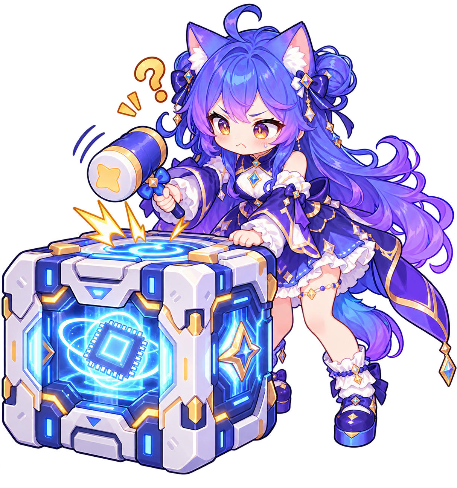
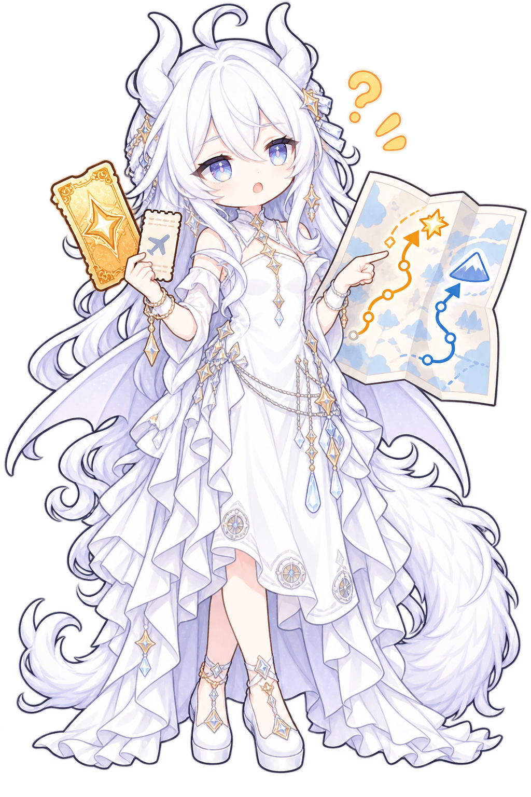

专属人物姿态与四套微场景已接入游戏 · 可切换背景检查透明边缘
前方白饭雨：目标 24 颗，分 3 波出现
“额度补好了，饭也补好了！”
查看独立原图
12 颗白饭补给 + 一层防火墙
“刚才的掉线，补你一顿。”
视野内前方障碍变白饭；保留平台和坑
“这版先撤回，障碍也一起撤。”
两道验证条；无伤通过后额外奖励 8 颗白饭
“验证通过，再验证一下。”
随机 2–3 项技能六折，窗口 12 秒
“补货了！这次真的有货！”
随机一项：护盾 / 吸附 6 秒 / GPU 芯片 4 秒
“看得见、听得见，还能掉装备！”
12 颗白饭从破粮袋落入饭线，实际拾取才到账。

下砸或冲刺打开重启箱，完整通过再补 8 颗饭。

地面 6 颗普通饭，两层可选站台有 3 颗大米饭。
三个包裹只有一个真货，认准实心米粒印记。
集齐 3 片芯片，获得 GPU 加速 4 秒。